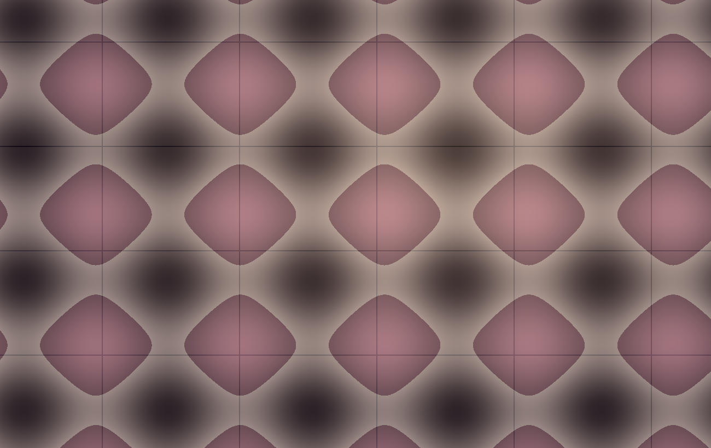
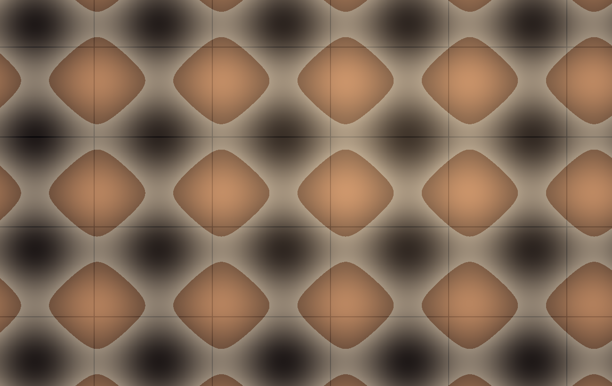
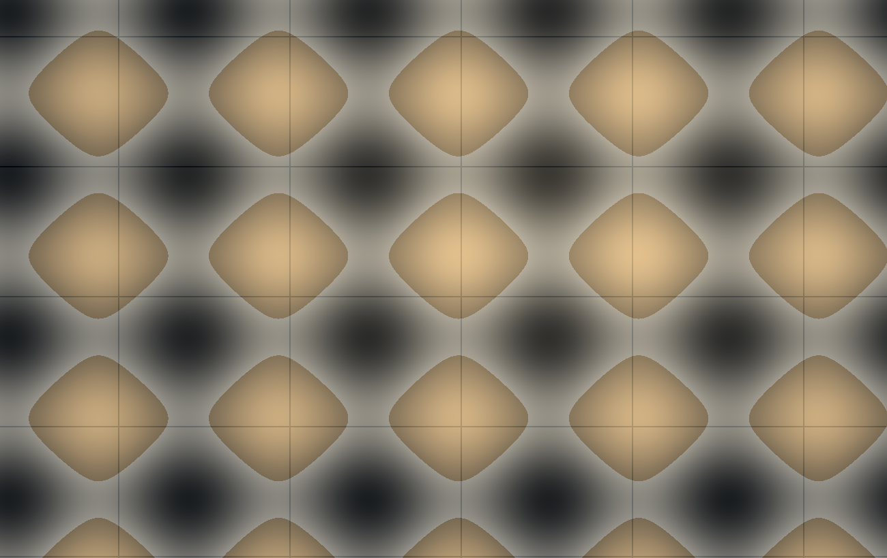
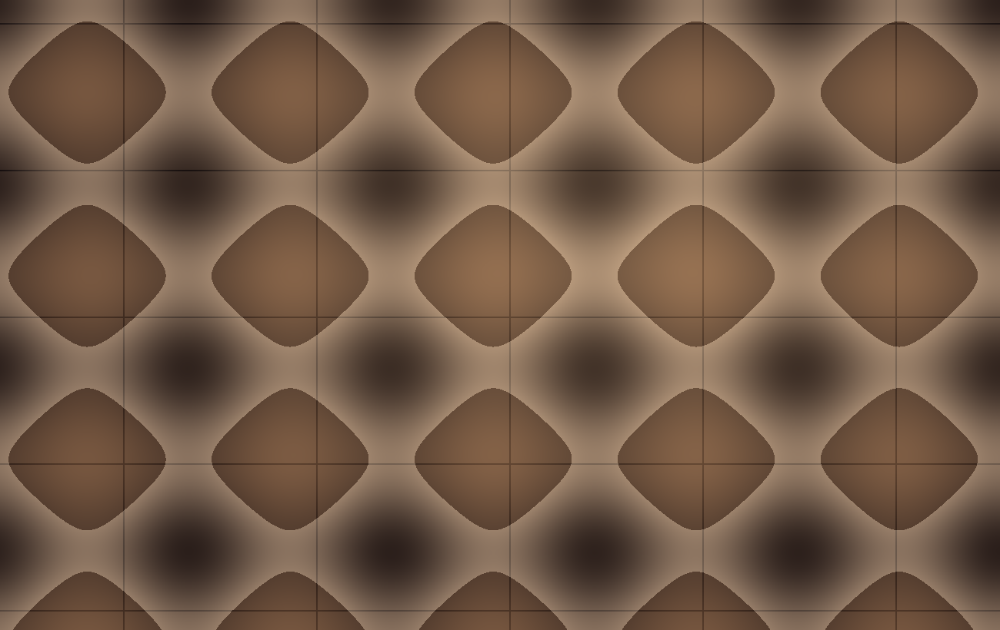
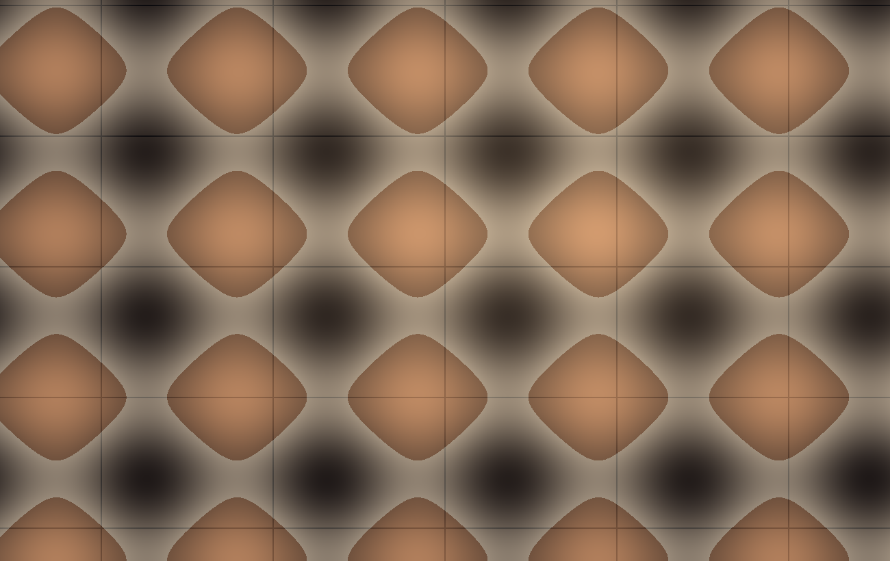
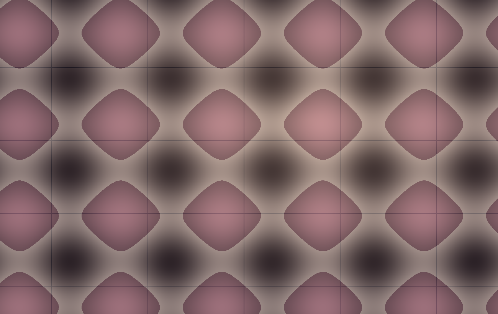
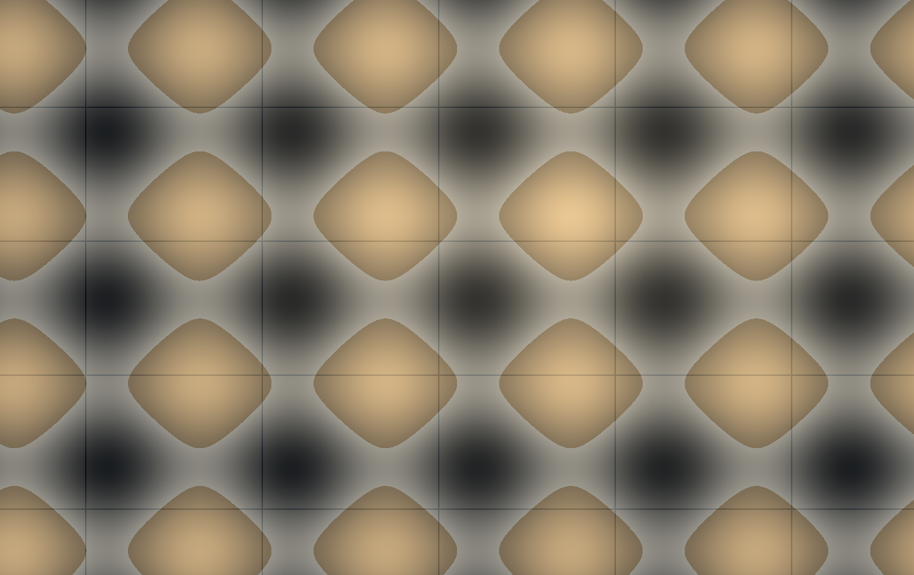
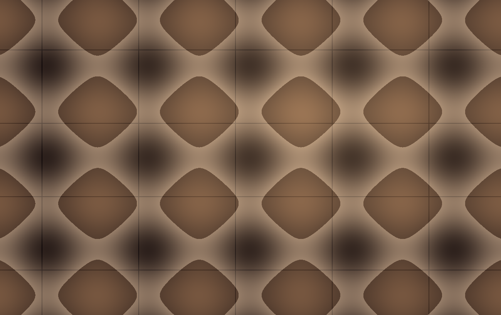

Capture the perfect day in stunning detail.
Editorial Weddings
Marlow & Finch Studio specializes in editorial weddings, creating timeless and elegant images that tell your love story.
View service detailEditorial photography with warmth, restraint, and cinematic polish
Marlow & Finch Studio creates editorial wedding, portrait, brand, and event photography for clients who want quiet luxury, human emotion, and a finished visual story with depth.
18select commissions accepted each season
72 hrcurated preview gallery turnaround for weddings and events
4service tracks across weddings, portraits, brands, and gatherings

Each commission is planned with editorial structure and photographed with room for instinct.

Capture the perfect day in stunning detail.
Marlow & Finch Studio specializes in editorial weddings, creating timeless and elegant images that tell your love story.
View service detail
Elevate the art of personal expression.
Our portrait sessions capture your essence, creating images that are both powerful and beautiful.
View service detail
Empower your brand with stunning visuals.
Marlow & Finch Studio helps businesses create memorable images that resonate with their audience.
View service detail
Document the celebration with elegance.
Capture every moment of your event in a high-end, cinematic style.
View service detailselect commissions accepted each season
curated preview gallery turnaround for weddings and events
service tracks across weddings, portraits, brands, and gatherings
of editorial image-making and production experience
Wedding weekends, founder portraits, and events photographed with a cinematic editorial eye.
Editorial wedding
A weekend celebration photographed with a restrained editorial rhythm: quiet getting-ready frames, sculptural florals, family portraits, and a cinematic evening reception.
Delivered a 640-image gallery, a 40-frame editorial selects set, and a print-ready heirloom album design.Brand photography
A studio and location session for a design founder who needed portraits, process imagery, and tactile product details for a full site relaunch.
Created a 120-image brand library used across the website, launch emails, press kit, and social campaign.Event photography
Discreet coverage of donor arrivals, room design, speeches, performances, and candid guest interactions at a black-tie arts benefit.
Produced next-morning press selects and a complete sponsor gallery within three business days.From first inquiry to final print, the studio keeps planning clear.
01
We begin with a consultation to understand your needs and vision, setting the stage for a seamless collaboration.
02
Our team develops a detailed plan that outlines the logistics, timelines, and creative vision for your event or session.
03
On the day of the event or session, our experienced photographers are on-site to capture every moment with precision and artistry.
04
Our professional post-production team refines and enhances your photos, ensuring they meet your highest standards.
"The photographs feel like the day actually felt: soft, alive, and beautifully observed. Nothing looked staged, but every frame felt intentional."
Clara and Theo
Editorial wedding clients
"Marlow & Finch translated our brand into images with texture and restraint. The campaign finally looked like the company we had been trying to describe."
Nina Patel
Founder, Vale Atelier
"They were calm in a room full of moving parts and still found the small moments that made the gala matter."
Elliot Reed
Director, Harrington Arts Trust

Wedding Planning
A practical guide to creating space for portraits, family pictures, and the unscripted frames couples remember most.
Read article
Brand Photography
The difference between a folder of attractive images and a working visual system for launches, press, and campaigns.
Read article
Studio Notes
A short note on proofing, album sequencing, and the discipline that comes from making images live outside a screen.
Read articleInquiries
Tell us what you are planning, what the images need to hold, and the kind of presence you want from the studio. We will respond with availability, fit, and a clear next step.
Contact Us